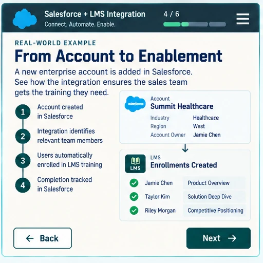
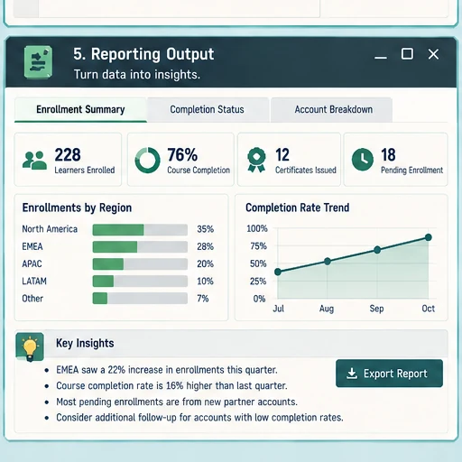

Repeated Salesforce lookups and field preparation move through the workflow.
Systems + Automation
System Integrations & Workflows
I improve the process before I automate it. I find the friction, map the systems and handoffs around it, automate the repeatable work, and keep human review where judgment still matters.
Process diagnosisDependency mappingHuman checkpointsValidationMaintainability
Workflow Examples
Different systems. The same design discipline.
Switch examples to see what moved, what stayed under human control, and how the output was made easier to review and maintain.
System Integration
Salesforce → LMS account workflow
Turn a learner list into verified account data and review-ready LMS placement records without hiding uncertain matches.
An updated workbook preserves the account evidence and placement record.
Human checkpointReview ambiguous matches and confirm final LMS placement.

Featured Case Study
Certification Reporting Automation
The deeper example behind the reporting workflows: four recurring LMS exports become one review-ready workbook, with failed inputs and exception records kept visible.

See the automation boundary, validation gates, exception handling, and the real reporting surfaces built for review.
View the case study →Other Work
Workflows connect the rest of the learning system.
These portfolio areas show the learning, quality, and platform work that sits on either side of the automation.
Learning Experience
Instructional Design
Courses, pathways, practice, and performance support that depend on clear delivery and maintenance workflows.
Explore instructional design →AI Quality
AI Training and Evaluation
Evidence-based evaluation workflows with rubric scoring, calibration, and actionable feedback.
Explore AI evaluation →Learning Platforms
LMS Administration
Content, access, migration, learner support, and reporting across Absorb and Docebo.
Explore LMS Administration →